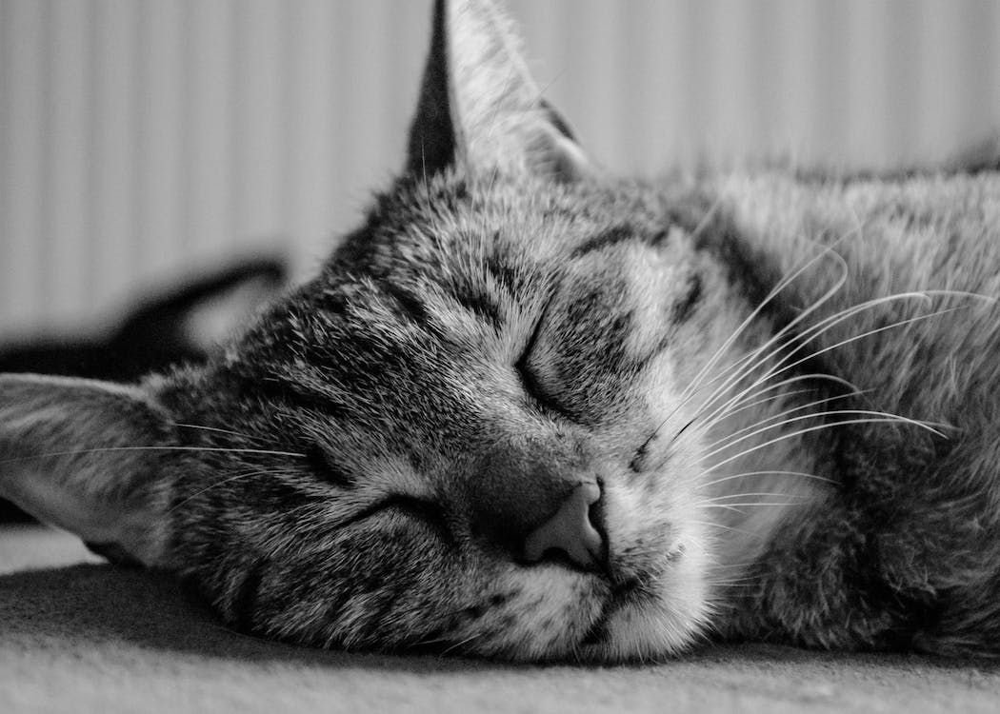
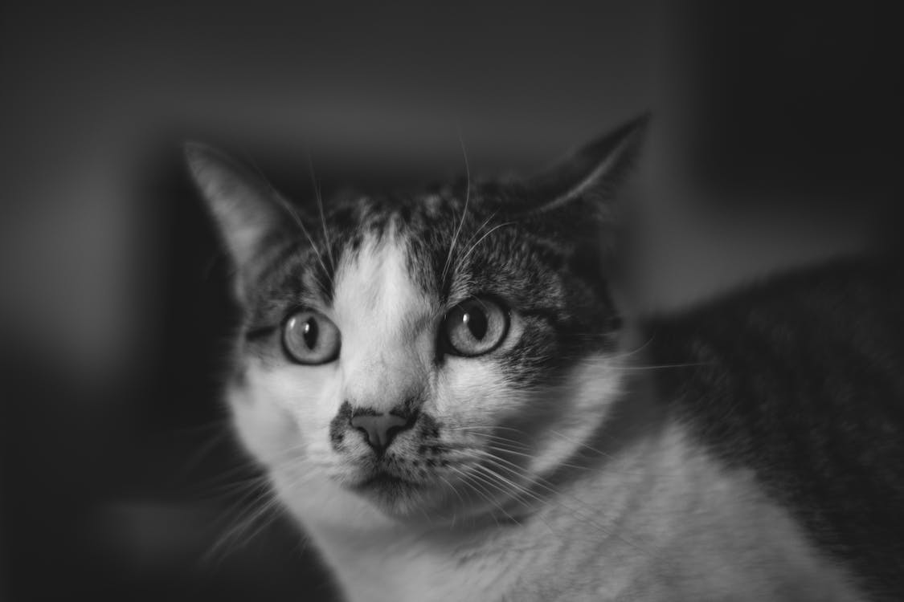
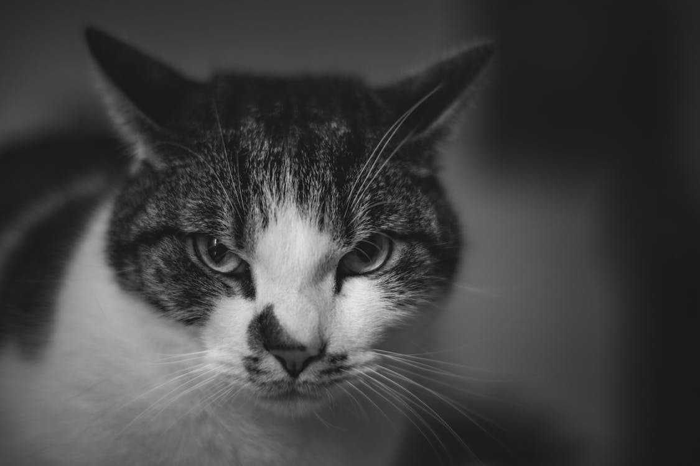

Oh My Paw
A cattery for all, big and small

Our cat care services
Our cat café gives our customers the perfect opportunity to familiarise themselves with our staff and our services, meanwhile enjoying a nice cup of coffee!
However, the fun doesn't stop there. At Oh My Paw, we ensure that all cats are treated with the best of care, which includes rescues and strays. They're well groomed and taken care of before they're exposed to the public in hopes of finding themselves a brand new home.
Click here to read our menu options...
